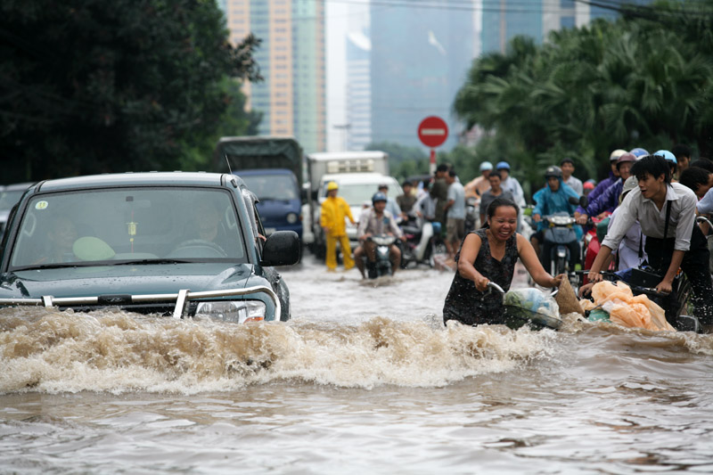
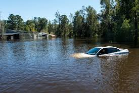
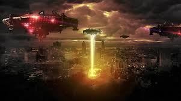

Everyone should be prepared for disaster, no matter how unlikely. This site is dedicated to researching survival strategies for disasters that most people deem unlikely or impossible to occurr. We are composed of the most forward thinking minds. If you fail to prepare for these scanarios, be prepared for your doom.
Zombies
The living dead will rise with a singular desire to consume the living. This is a challenging scenario because people you love will try to kill and eat you, food and safety will be difficult to find, and the world will degenerate into a scarred wasteland where the remnants of humanity fight with each other and the dead to survive.
Flood

If you thought losing the coasts due to sea level rise was as bad as flooding could get, think again! We're talking water levels so high you will question how it is physically possible. Your options will be limited to building some type of boat, or "Ark" to survive".
Aliens

Aliens have arrived and need Earth's resources. They are not averse to taking it by force. Be prepared for technologies and weapons far surpassing our own. The world governments will prove useless in defending humanity from this threat, so it will be up to you to protect yourself and your family from the extraterrestrial menace.